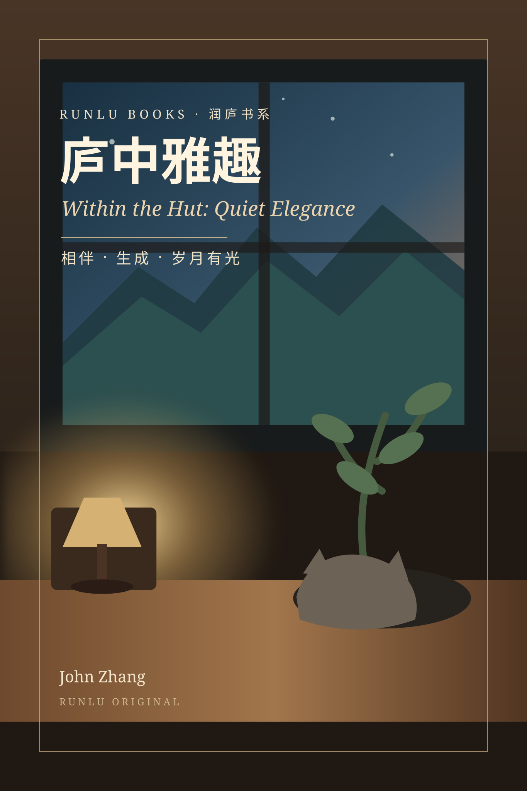

RUNLU BOOKS · COMPLETED MANUSCRIPT
庐中雅趣
Within the Hut: Quiet Elegance
A human meets AI. An idea becomes a world.
This RUNLU original begins with a phrase that arrives at 2:43 in the morning.
A human meets AINot a myth of replacement.
Ordinary lifeWarehouse shifts, night cleaning, family.
From idea to worldButtons, systems, books and RUNLU.
Quiet joy through timeNot faster. A little more real.
Read the first ten chapters
The Chinese text comes from the completed cumulative manuscript.
01Words That Lit Up in the Night→02The First Time I Said ‘Old Pal’→03The Numbers in the Warehouse That Refused to Behave→04Could This Become a System?→05The First Page That Came Alive→06The Warehouse in My Phone→07The Data Disappeared→08A Table for Two→09RUNLU · 润庐→10The First Light in the Hut→
Status note: completed manuscript, not yet published.